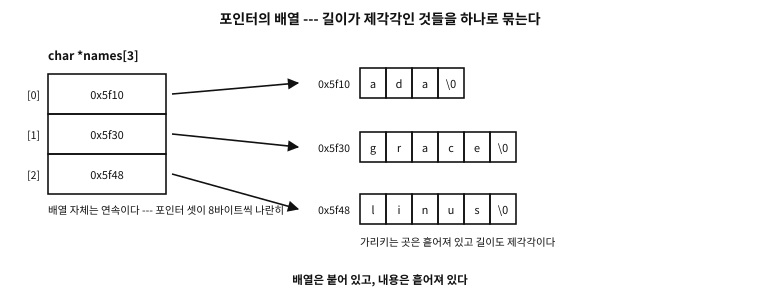
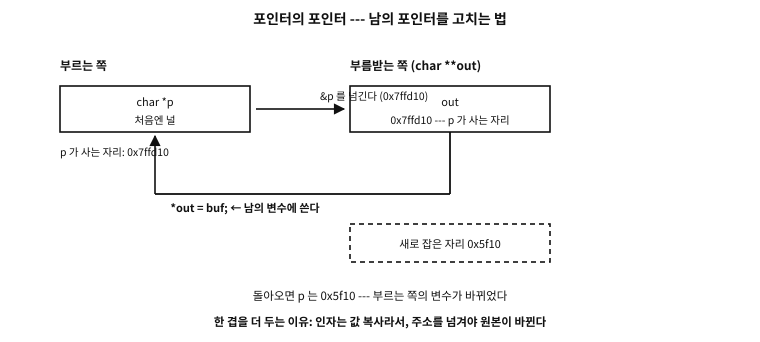

41 배열과 포인터 — 언제 같고 언제 다른가
먼저 알아야 할 것
sizeof돌아보기
39장에서 “배열의 이름은 첫 원소의 주소로 무너진다”고 배웠고, 40장에서는 2차원 배열 매개변수가 int (*)[N]이 된다고 배웠다. 그런데 그 둘을 배운 지금, “배열과 포인터는 같은 것인가”라는 물음에 한 문장으로 답할 수 있는가?
답. 아직 못 한다. 그리고 그것이 이 장이 있는 이유다. 지금까지 무너짐이 일어나는 자리를 하나씩 배웠다. 그러나 실무에서 사고를 내는 것은 그 반대 — 무너지지 않는 자리와 무너진 뒤에 잃은 것이다. 조각은 다 모였으니, 이제 하나의 그림으로 닫을 차례다.
이 장의 필요성과 맥락
이 장이 끝나면
이 장에서 답할 질문
- 규칙 ③ 때문에
int p[5]라고 적어도 포인터가 된다면, 그[5]는 아무 뜻도 없는가? sizeof arr / sizeof arr[0]로 원소 수를 세는 관용구를 자주 보는데, 이것이 위험한 경우가 있다고 들었다.- 그러면
void f(int m[][3])과void f(int (*m)[3])은 완전히 같은 것인가?
41.1 왜 이 장이 따로 필요한가#
앞의 두 장을 읽고도 이 장이 남는 이유부터 밝혀야 한다. 새로운 문법은 하나도 나오지 않는다. 이 장이 하는 일은 이미 배운 조각을 한자리에 모아 규칙으로 닫는 것이다. 그럴 만한가?
있다. “배열은 포인터다”는 C에서 가장 널리 퍼진 오해이고, 동시에 가장 늦게 발각되는 오해이기 때문이다.
41.1.1 왜 이 오해는 이렇게 질긴가#
틀린 말이 널리 퍼지려면 자주 맞아야 한다. 이 말이 정확히 그렇다.
char buf[64];
char *p = buf;
strlen(buf); /* 된다 */
strlen(p); /* 된다 */
printf("%s %s", buf, p); /* 둘 다 된다 */
buf[3]; p[3]; /* 둘 다 된다 */C를 배우는 사람은 대개 이런 순서로 나아간다 — 한 함수 안에서 다 짜다가, 함수를 나누고, 마지막에 파일을 나눈다. ★ 그 경로의 대부분을 「배열과 포인터가 정말로 교환되는 문맥」에서 보낸다. 함수 인자가 바로 그 문맥이기 때문이다. 그래서 수백 번의 성공 경험이 쌓인 뒤에야 처음으로 틀린 자리를 만난다.
게다가 우리 눈에는 둘이 같은 것으로 보일 이유가 하나 더 있다. main의 매개변수 char *argv[]와 char **argv를 아무렇게나 바꿔 써도 되는 것을 늘 보아 왔다. 이것도 함수 매개변수라서 되는 것인데, 문맥이 눈에 띄지 않으니 “C는 주소 계산에 일관되고 규칙적이구나”라는 잘못된 확신이 자란다.1
41.1.2 그리고 발각은 늦게 온다#
한 파일 안에 있으면 컴파일러가 잡아 준다. 배열로 정의한 것을 포인터로 쓰면 타입이 안 맞으니 바로 오류다. 문제는 파일이 갈릴 때다. 그때는 컴파일러가 양쪽을 동시에 볼 수 없다. §4에서 실물로 확인하겠지만, 미리 결론만 적어 둔다 — 컴파일도 되고 링크도 되고, 실행할 때 죽는다.
이 장의 목적은 그 자리를 미리 아는 것이다.
41.2 무엇이 다른가 — 다섯 축#
먼저 두 개념을 나란히 놓고 축마다 갈라 본다.
| 축 | 배열 | 포인터 |
|---|---|---|
| 무엇을 담는가 | 데이터 그 자체를 담는다 | 데이터의 주소를 담는다 |
| 접근에 몇 걸음 | 주소는 이미 안다 → 한 번 읽는다 | 주소를 먼저 읽고 → 또 한 번 읽는다 |
| 이름이 있는가 | 그 자체가 이름 있는 변수다 | 가리키는 대상은 보통 익명이다 |
| 크기를 아는가 | sizeof가 전체 크기를 준다 | sizeof는 주소 하나의 크기 |
| 주로 어디에 쓰나 | 개수가 고정된 원소 묶음 | 동적 자료구조, malloc/free |
표 41.1 — 배열과 포인터를 가르는 다섯 축
세 번째 축이 특히 흥미롭다. int a[5];라고 쓰면 그 스무 바이트에는 a라는 이름이 붙는다. 반면 int *p = malloc(20);이라고 쓰면 그 스무 바이트에는 이름이 없다 — p라는 이름은 «주소를 담은 8바이트»의 것이지 «데이터 20바이트»의 것이 아니다. 힙에 있는 것에 이름이 없다는 45장의 이야기가 여기서 다시 만난다.
examples/ch40/arrptr.c
/* 배열과 포인터가 어디서 갈라지는지를 한자리에서 갈라 본다.
같은 자리를 가리키는 두 값이 어떻게 다르게 행동하는지가 요점이다. */
#include <stdio.h>
static int arr[5] = { 10, 20, 30, 40, 50 };
static int *ptr = arr; /* 무너진 주소를 담는다 */
static void by_param(int p[5]) /* [5] 라고 적어도 포인터다 */
{
/* 오늘의 컴파일러는 바로 이 자리에 경고를 준다(-Wsizeof-array-argument).
경고가 맞다 — 보여 주기 위해 그 하나만 잠시 끈다. */
#if defined(__GNUC__)
# pragma GCC diagnostic push
# pragma GCC diagnostic ignored "-Wsizeof-array-argument"
#endif
printf(" inside the function sizeof p = %zu (one pointer)\n", sizeof p);
#if defined(__GNUC__)
# pragma GCC diagnostic pop
#endif
}
int main(void)
{
puts("① what does it hold - the size tells you");
printf(" sizeof arr = %zu sizeof ptr = %zu\n", sizeof arr, sizeof ptr);
printf(" element count: sizeof arr / sizeof arr[0] = %zu\n",
sizeof arr / sizeof arr[0]);
puts("\n② same address, different type - +1 skips a different width");
printf(" arr = %p\n", (void *)arr);
printf(" &arr[0] = %p (the same)\n", (void *)&arr[0]);
printf(" &arr = %p (the same - but its type is int(*)[5])\n", (void *)&arr);
printf(" arr + 1 = %p (+%td bytes)\n",
(void *)(arr + 1), (char *)(arr + 1) - (char *)arr);
printf(" &arr + 1 = %p (+%td bytes - it skips the whole array)\n",
(void *)(&arr + 1), (char *)(&arr + 1) - (char *)arr);
puts("\n③ which one can move");
ptr = ptr + 2; /* 포인터는 옮길 수 있다 */
printf(" moving ptr two slots gives *ptr = %d\n", *ptr);
/* arr = ptr; <- 배열 이름은 수정 가능한 좌변값이 아니다: 컴파일 오류 */
ptr = arr;
puts("\n④ a subscript is a pointer offset - which is why it can be reversed");
printf(" arr[3] = %d, *(arr + 3) = %d, 3[arr] = %d\n",
arr[3], *(arr + 3), 3[arr]);
puts("\n⑤ pass it to a function and the size disappears");
printf(" sizeof arr before the call = %zu\n", sizeof arr);
by_param(arr);
return 0;
}
실행 결과
① what does it hold - the size tells you
sizeof arr = 20 sizeof ptr = 8
element count: sizeof arr / sizeof arr[0] = 5
② same address, different type - +1 skips a different width
arr = 0x5641b51ad020
&arr[0] = 0x5641b51ad020 (the same)
&arr = 0x5641b51ad020 (the same - but its type is int(*)[5])
arr + 1 = 0x5641b51ad024 (+4 bytes)
&arr + 1 = 0x5641b51ad034 (+20 bytes - it skips the whole array)
③ which one can move
moving ptr two slots gives *ptr = 30
④ a subscript is a pointer offset - which is why it can be reversed
arr[3] = 40, *(arr + 3) = 40, 3[arr] = 40
⑤ pass it to a function and the size disappears
sizeof arr before the call = 20
inside the function sizeof p = 8 (one pointer)
출력의 ①이 첫째·넷째 축이다. sizeof arr는 20이고 sizeof ptr는 8이다. 같은 자리를 가리키는 두 값인데 «자기 자신의 크기»를 물으면 답이 다르다.
②가 가장 값진 대목이다. arr, &arr[0], &arr는 주소가 셋 다 같다. 그런데 + 1을 해 보면 갈라진다.
arr + 1—int한 칸 옆, +4바이트&arr + 1— 배열 통째 옆, +20바이트
★ 주소가 같아도 타입이 다르면 다른 값이다. arr는 무너져서 int *가 되었고, &arr는 무너지지 않아 int (*)[5]다. 64장에서 배운 선언 읽기가 여기서 값을 한다 — 두 타입의 이름을 읽을 수 있으면 이 차이가 눈에 보인다.
③은 셋째 축의 다른 얼굴이다. ptr은 옮길 수 있지만 arr은 옮길 수 없다. arr = ptr;은 컴파일 오류다 — 배열 이름은 수정 가능한 좌변값이 아니기 때문이다. 예제에 주석으로 남겨 두었다.
41.3 접근의 걸음 수 — 이것이 진짜 차이다#
다섯 축 중 둘째가 가장 근본적이다. 그리고 눈으로 확인할 수 있다. 같은 x[i]라는 표기가 배열일 때와 포인터일 때 다른 기계어로 번역된다.
extern int a[];
extern int *p;
int via_array(int i) { return a[i]; }
int via_pointer(int i) { return p[i]; }gcc -O2 -c 로 컴파일해 objdump -d로 들여다본 결과다(x86-64).
a[i] — 배열 | p[i] — 포인터 |
|---|---|
movslq %edi,%rdi | ★ mov 0x0(%rip),%rax— 포인터 값을 메모리에서 읽는다 |
lea 0x0(%rip),%rax — 배열의 주소는 컴파일 때 안다 | movslq %edi,%rdi |
mov (%rax,%rdi,4),%eax — 한 번 읽는다 | mov (%rax,%rdi,4),%eax — 또 읽는다 |
| 메모리 접근 1회 | 메모리 접근 2회 |
표 41.2 — 첨자 접근의 걸음 수 비교
★ 차이가 명령 하나로 드러난다. 배열 쪽은 lea(주소 계산)로 끝나는데, 포인터 쪽은 그 자리에 mov가 있다 — 메모리에서 포인터 값을 꺼내 오는 읽기다. 배열 쪽에는 이 읽기가 아예 없다. 배열의 주소는 컴파일 시각에 정해지기 때문이다.
여기서 두 가지가 따라 나온다.
첫째, 왜 extern char a[];와 extern char a[100];이 둘 다 되는가. 컴파일러는 시작 주소에서 오프셋만 만들면 되므로 전체 길이를 알 필요가 없다. 반면 []가 아닌 차원은 알아야 한다 — 그래야 몇 바이트씩 건너뛸지 정할 수 있다 (40장에서 본 그 규칙이다).
둘째, 왜 포인터가 배열보다 빠르다는 말이 도는가. 옛날에는 루프 안에서 첨자를 쓰면 매번 곱셈이 들어간다고 여겨, 포인터를 직접 증가시키는 편이 빠르다고 했다. ★ 오늘 이 통설은 대체로 틀렸다. 첨자 접근이 포인터로 정의되어 있으므로 최적화기가 둘을 같은 표현으로 바꾸는 일이 흔하고, 오히려 배열 쪽이 별칭 정보가 분명해 벡터화에 유리한 경우가 많다.
흔한 오해. “루프에서는 첨자보다 포인터를 쓰는 것이 빠르다”
1차원 배열을 훑는 흔한 모양에서는 오늘날 차이가 거의 없다. 이유는 두 가지다. 첫째, a[i]는 표준이 *(a + i)로 정의하므로 컴파일러가 두 형태를 같은 중간 표현으로 만든다. 둘째, 스케일 곱셈은 원소 크기가 2의 거듭제곱이면 시프트 한 번이고, 그마저도 주소 지정 방식((%rax,%rdi,4))에 접혀 들어간다 — 표 41.2의 마지막 줄이 실물이다.
다만 조건이 붙는다. 원소가 구조체처럼 크기가 2의 거듭제곱이 아니면 진짜 곱셈이 남고, 포인터 여럿이 같은 곳을 가리킬 수 있는 상황에서는 컴파일러가 보수적으로 굴어 재적재가 늘어난다. 그럴 때 답은 “포인터로 바꾸기”가 아니라 재 보고 판단하기이고, 별칭이 없음을 알려 주는 도구를 쓰는 것이다.
41.4 파일을 건너뛰는 사고#
이제 §1에서 예고한 자리다. 정의는 배열인데 선언은 포인터인 경우.
/* def.c */ char msg[16] = "ABCDEFGHIJKLMNO";
/* use.c */ extern char *msg; /* ← 거짓말이다 */
printf("%c", msg[0]);두 파일을 각각 컴파일하고 링크해 실행해 보았다.
| 단계 | 결과 |
|---|---|
gcc -Wall -Wextra -c def.c use.c | ★ 경고 하나 없음 |
gcc -o mism def.o use.o | ★ 경고 하나 없음 |
./mism | Segmentation fault (종료 상태 139) |
표 41.3 — 선언이 어긋났을 때 벌어지는 일
무슨 일이 일어났는가. use.c는 “msg라는 자리에 주소가 들어 있다”고 믿는다. 그래서 그 자리에서 8바이트를 읽어 주소로 쓴다. 그런데 그 8바이트에 실제로 들어 있는 것은 문자 'A'~'H'다. 리틀 엔디언으로 읽으면 0x4847464544434241이라는 수가 되고, 그 번지로 찾아가려다 죽는다.
★ 여기서 정확히 무엇이 문제인지 짚어야 한다. 컴파일러는 잘못이 없다. use.c만 보면 그 코드는 완벽히 옳고, 링커는 이름만 잇지 타입을 모른다. 틀린 것은 사람이 한 약속이다.
반례. 선언을 손으로 적어 정의와 어긋나게 두기
/* 쓰는 쪽 파일마다 이렇게 적는다 */
extern char *msg;
extern int count;파일마다 손으로 extern을 적으면, 정의가 바뀌어도 그 선언들은 따라 바뀌지 않는다. 그리고 위에서 본 대로 아무도 경고해 주지 않는다.
처방은 하나뿐이다 — 선언은 헤더에 한 번만 두고, 정의하는 쪽도 그 헤더를 포함한다. 그러면 정의와 선언이 한 번역 단위 안에서 만나므로 컴파일러가 불일치를 잡는다(55장).
/* msg.h */ extern char msg[16];
/* def.c */ #include "msg.h" ← 정의하는 쪽도 포함한다. 이 한 줄이 관건
char msg[16] = "...";이 관행을 지키면 이 절의 사고는 아예 일어날 수 없다. C에는 파일을 가로지르는 타입 검사가 없으니, 헤더가 그 역할을 대신하게 만드는 것이다.
실제 사례. 같은 꼴은 배열 밖에서도 난다
정의와 선언이 어긋나는 사고는 배열/포인터만의 것이 아니다. int로 정의한 것을 long으로 선언하거나, static을 빠뜨려 두 파일이 같은 이름을 서로 다른 것으로 정의하는 일도 같은 뿌리다 — 번역 단위마다 따로 믿는다는 C의 구조 때문이다.
오늘의 도구가 도와주기는 한다. 링크 시각 최적화(LTO)를 켜면 컴파일러가 두 번역 단위를 함께 보게 되어 일부 불일치를 잡아 준다. 실제로 위 예제를 -flto로 빌드하면 경고가 나온다. 다만 이것은 보조 수단이지 규율의 대체가 아니다. 헤더 하나로 막을 수 있는 것을 최적화 옵션에 맡길 이유는 없다.
41.5 언제 같아지는가 — 세 규칙#
이제 반대 방향이다. 무너짐이 일어나는 자리를 규칙으로 닫는다. 표준의 조항과 함께 적는다.
| 규칙 | 내용 |
|---|---|
| ① 식 안에서 | 배열 타입의 식은 첫 원소를 가리키는 포인터로 변환된다. 몇 가지 예외를 뺀다(§다음 절) |
| ② 첨자 | a[i]는 정의상 *(a + i)다 — 첨자 연산자는 포인터 오프셋이다 |
| ③ 매개변수 | 함수 매개변수의 「배열 of T」 선언은 「포인터 to T」로 고쳐진다 |
표 41.4 — 배열이 포인터가 되는 세 규칙
세 규칙이 각각 어디에 쓰이는지가 중요하다.
규칙 ①이 int *p = arr;을 합법으로 만든다. 그리고 strlen(buf)가 되는 이유다.
규칙 ②는 표기법의 문제가 아니라 정의다. 그래서 a[i]와 *(a+i)는 「같은 결과를 낸다」가 아니라 「같은 것」이다. §7에서 이 정의의 재미있는 귀결을 본다.
규칙 ③이 가장 자주 오해된다. 이것은 함수 매개변수라는 한 문맥에서만 일어난다. 그 밖의 어디에서도 배열 선언은 배열 선언이고 포인터 선언은 포인터 선언이다 — §4의 사고가 바로 그 사실을 몰라서 난다.
문. 규칙 ③ 때문에 int p[5]라고 적어도 포인터가 된다면, 그 [5]는 아무 뜻도 없는가?
답. 컴파일러에게는 뜻이 없다. 예제 ⑤가 그것을 보였다 — sizeof p가 5칸이 아니라 8, 즉 포인터 하나의 크기다.
★ 다만 두 가지 쓸모가 남는다. 첫째는 사람에게 주는 신호다. int table[]은 “여기 원소가 여럿 따라온다”고 말해 주고, int *table은 그 말을 안 한다. 둘째가 더 중요한데, 오늘의 컴파일러는 이 자리를 검사한다. 예제에서 sizeof p를 쓰자 -Wsizeof-array-argument 경고가 떴고, 보여 주려고 그 경고 하나만 잠시 껐다. 즉 [5]를 적어 두면 컴파일러가 “이 사람은 배열을 기대하고 있다”고 알고 도와준다.
39장에서 본 [static N] 표기는 이것을 한 걸음 더 밀어 «최소 N개는 온다»는 약속으로 만든 것이다. 뜻이 없는 것이 아니라, 언어의 타입 체계 밖에서 뜻을 갖는다고 하는 편이 정확하다.
41.6 무너지지 않는 자리#
규칙 ①에는 예외가 있고, 그 예외가 실무에서 대단히 중요하다. 무너지지 않는 자리를 아는 것이 곧 배열의 정체를 아는 것이다.
| 자리 | 무엇이 되는가 | 왜 중요한가 |
|---|---|---|
sizeof arr | 배열 전체 크기 | 원소 수를 셀 수 있다 — 무너지면 못 센다 |
&arr | T (*)[N] — 배열을 가리키는 포인터 | &arr + 1이 배열 통째를 건너뛴다 |
typeof(arr) | T [N] 그대로 (C23) | 배열 타입을 그대로 옮겨 적을 수 있다 |
| 문자열 리터럴로 초기화 | char a[] = "..." — 복사본을 만든다 | ★ char *p = "..."와 완전히 다르다 |
표 41.5 — 무너지지 않는 자리
★ 이 넷이 표준이 든 목록 전부다(C23 §6.3.2.1 p3). alignof 가 여기 없는 것이 눈에 띈다 — 그 낱말은 타입 이름만 받기 때문이다(§6.5.4.4). alignof(arr) 처럼 식을 넣는 코드가 실제로 컴파일되기는 하는데, gcc 는 「ISO C does not allow alignof (expression)」, clang 은 「a GNU extension」이라고 짚어 준다 — 표준이 아니라 확장이다.
마지막 줄이 특히 중요하다. 겉모습이 거의 같은 두 줄이 전혀 다른 일을 한다.
char a[] = "gooseberry"; /* 배열 — 내 것이므로 고쳐도 된다 */
char *p = "breadfruit"; /* 리터럴을 가리킬 뿐 — 고치면 미정의 동작 */a는 리터럴의 내용을 복사해 만든 내 배열이다. p는 프로그램 어딘가에 있는 리터럴을 가리키기만 한다. 그래서 a[0] = 'G';는 되고 p[0] = 'B';는 미정의 동작이다 — 대개 읽기 전용 구역에 놓여 실행 중에 죽는다(42장).
문. sizeof arr / sizeof arr[0]로 원소 수를 세는 관용구를 자주 보는데, 이것이 위험한 경우가 있다고 들었다.
답. 있다. ★ 그 관용구는 «arr이 진짜 배열일 때만» 맞는다. 그런데 함수 안에서는 규칙 ③ 때문에 배열 매개변수가 이미 포인터다. 그 안에서 같은 관용구를 쓰면 «포인터 크기 ÷ 원소 크기»를 계산하게 된다 — 64비트에서 int 배열이면 항상 2가 나온다.
void f(int a[10]) {
size_t n = sizeof a / sizeof a[0]; /* 10 이 아니라 2 */
}그래서 이 관용구는 배열이 선언된 그 스코프 안에서만 쓴다. 함수 경계를 넘길 때는 길이를 별도 인자로 함께 넘기는 것이 C의 관행이고, 그 관행이 귀찮아서 생략한 자리가 곧 넘침 취약점이 된다(43장). 앞서 말한 -Wsizeof-array-argument가 정확히 이 실수를 겨냥한 경고다.
41.7 6[a]가 합법인 이유#
규칙 ②를 정의로 받아들이면 재미있는 귀결이 하나 나온다. a[i]가 *(a + i) 라면, 덧셈은 교환법칙이 성립하므로 *(i + a)도 같은 것이고, 따라서 i[a]도 같은 것이다.
예제 ④가 그것을 확인했다 — arr[3], *(arr + 3), 3[arr]이 모두 40이다.
이것을 실제 코드에 쓸 일은 없다. 그러나 알아 둘 값은 있다. 이 표기가 합법 이라는 사실 자체가 「첨자는 배열의 문법이 아니라 포인터의 문법」임을 증명하기 때문이다. 만약 []가 배열 전용 장치였다면 3[arr]은 말이 되지 않았을 것이다.
흔한 오해. “[]는 배열에 붙는 연산자다”
아니다. []의 왼쪽 피연산자는 포인터이고, 배열은 그 자리에서 무너져 들어갈 뿐이다. 그래서 포인터에도 첨자를 쓸 수 있고(p[3]), 배열이 아닌 것에도 쓸 수 있으며, 심지어 순서를 뒤집어도 된다.
이 사실을 받아들이면 여러 가지가 한꺼번에 설명된다. 왜 C에는 첨자 범위 검사가 없는가 — 첨자가 배열 접근이라는 보장이 애초에 없기 때문이다. 왜 p[-1]이 문법적으로 통과하는가 — 오프셋에 음수를 못 쓸 이유가 없기 때문이다. 검사할 대상이 무엇인지 언어가 모르는 것이다.
41.8 매개변수 변환은 한 겹만 일어난다#
규칙 ③을 다차원으로 확장할 때 사람들이 가장 많이 틀리는 자리다. ★ 배열의 배열은 「포인터의 포인터」가 되지 않는다. 「배열을 가리키는 포인터」가 된다.
examples/ch40/params.c
/* 매개변수에서 배열이 포인터로 고쳐지는 규칙은 「한 겹만」 적용된다.
그리고 C99 이후에는 크기를 함께 넘겨 진짜 2차원 매개변수를 쓸 수 있다. */
#include <stdio.h>
/* ① 배열의 배열 → 「배열에 대한 포인터」 (포인터의 포인터가 아니다) */
static void take_2d(int (*m)[3], size_t rows)
{
printf(" int m[][3] → int (*m)[3] : sizeof m = %zu, sizeof *m = %zu\n",
sizeof m, sizeof *m);
printf(" m[1][2] = %d (one row is %zu bytes)\n", m[1][2], sizeof *m);
(void)rows;
}
/* ② 포인터의 배열 → 「포인터에 대한 포인터」 (argv 가 이 모양이다) */
static void take_argvish(char **v)
{
printf(" char *v[] → char **v : v[0]=\"%s\", v[1]=\"%s\"\n", v[0], v[1]);
}
/* ③ C99 이후 — 크기를 먼저 받으면 진짜 가변 2차원 매개변수가 된다 */
static long sum_2d(size_t rows, size_t cols, int m[rows][cols])
{
long s = 0;
for (size_t i = 0; i < rows; i++)
for (size_t j = 0; j < cols; j++)
s += m[i][j];
return s;
}
int main(void)
{
int grid[2][3] = { { 1, 2, 3 }, { 4, 5, 6 } };
int wide[2][4] = { { 1, 1, 1, 1 }, { 2, 2, 2, 2 } };
char *names[] = { "hana", "dul" };
puts("① passing an array of arrays");
take_2d(grid, 2);
puts("\n② passing an array of pointers");
take_argvish(names);
puts("\n③ pass the sizes too and one function takes any width");
printf(" sum_2d(2,3,grid) = %ld\n", sum_2d(2, 3, grid));
printf(" sum_2d(2,4,wide) = %ld <- a shape take_2d cannot accept\n",
sum_2d(2, 4, wide));
return 0;
}
실행 결과
① passing an array of arrays
int m[][3] → int (*m)[3] : sizeof m = 8, sizeof *m = 12
m[1][2] = 6 (one row is 12 bytes)
② passing an array of pointers
char *v[] → char **v : v[0]="hana", v[1]="dul"
③ pass the sizes too and one function takes any width
sum_2d(2,3,grid) = 21
sum_2d(2,4,wide) = 12 <- a shape take_2d cannot accept
| 인자로 넘긴 것 | 매개변수는 이렇게 된다 | 바뀐 정도 |
|---|---|---|
배열의 배열 char c[8][10] | char (*c)[10] — 배열에 대한 포인터 | 한 겹만 |
포인터의 배열 char *c[15] | char **c — 포인터에 대한 포인터 | 한 겹만 |
배열에 대한 포인터 char (*c)[64] | 그대로 | 안 바뀜 |
포인터에 대한 포인터 char **c | 그대로 | 안 바뀜 |
표 41.6 — 매개변수에서 한 겹만 바뀐다
첫 줄과 둘째 줄을 나란히 놓고 보면 규칙이 분명해진다. 바깥 한 겹만 포인터가 되고, 안쪽은 손대지 않는다. 예제 ①의 출력이 그 증거다 — sizeof m은 8(포인터) 인데 sizeof *m은 12, 곧 int 세 칸짜리 행이다.
★ 이제 오래 궁금했던 것 하나가 풀린다. 왜 main의 두 번째 매개변수가 char **argv인가? argv는 포인터의 배열이기 때문이다(둘째 줄). 만약 그것이 배열의 배열이었다면 char (*argv)[15] 같은 것이 되었을 것이다. 예제 ②가 같은 모양을 그대로 흉내 낸다.
문. 그러면 void f(int m[][3])과 void f(int (*m)[3])은 완전히 같은 것인가?
답. 같다. 규칙 ③이 앞의 것을 뒤의 것으로 고친다. 예제의 take_2d가 뒤의 표기를 쓴 이유는 실제로 그것이 되기 때문이고, 앞의 표기를 쓰는 사람들은 «행이 여럿 따라온다»는 뜻을 사람에게 전하려는 것이다. 40장에서 본 그대로다.
주의할 것은 괄호다. int *m[3]은 전혀 다른 것 — «포인터 세 개짜리 배열» 이고, 매개변수 자리에서는 다시 int **m으로 고쳐진다. 64장의 우선순위 규칙이 여기서 힘을 발휘한다.
41.9 실무의 세 패턴 — 눈으로 보기#
규칙은 다 나왔다. 이제 그 규칙들이 실제 코드에서 어떤 모양으로 나타나는지를 주소와 함께 본다. 셋 다 하루에도 몇 번씩 지나가는 패턴이다.
examples/ch40/ptr_shapes.c
/* 포인터가 실제로 무엇을 가리키는지 — 주소를 찍어 눈으로 확인한다.
주소값 자체는 실행마다 다르지만(ASLR), *관계*는 언제나 같다:
간격, 어느 것이 어디를 가리키는가, 한 겹인가 두 겹인가. */
#include <stddef.h>
#include <stdio.h>
#include <stdlib.h>
#include <string.h>
/* ① 포인터의 배열 대 2차원 배열 — 같은 자료, 다른 배치 */
static void two_shapes(void)
{
/* 포인터 배열: 칸은 주소 셋, 글자는 흩어져 있다 */
const char *names[] = { "ada", "grace", "linus" };
/* 2차원 배열: 한 덩어리, 모든 줄이 같은 폭 */
char table[3][8] = { "ada", "grace", "linus" };
printf(" names: sizeof = %zu (%zu cells x %zu)\n",
sizeof names, sizeof names / sizeof names[0], sizeof names[0]);
for (size_t i = 0; i < 3; i++)
printf(" names[%zu] -> %p \"%s\" (%zu bytes)\n",
i, (const void *)names[i], names[i], strlen(names[i]) + 1);
printf(" table: sizeof = %zu (%zu rows x %zu)\n",
sizeof table, sizeof table / sizeof table[0], sizeof table[0]);
for (size_t i = 0; i < 3; i++)
printf(" &table[%zu] = %p \"%s\" (step %td)\n",
i, (const void *)table[i], table[i],
i == 0 ? (ptrdiff_t)0 : table[i] - table[i - 1]);
}
/* ② 포인터의 포인터 — 남의 포인터를 고치는 자리 */
static int take_buffer(char **out, size_t n)
{
char *buf = malloc(n);
if (buf == NULL)
return -1; /* 실패하면 *out 을 건드리지 않는다 */
memset(buf, 'x', n - 1);
buf[n - 1] = '\0';
*out = buf; /* ← 부르는 쪽의 변수에 쓴다 */
return 0;
}
/* 같은 일을 한 겹으로 적으면 --- 사본만 바뀌고 원본은 그대로다.
(`out` 을 쓰고 나서 읽지 않는다는 경고를 피하려고 한 번 들여다본다 ---
바로 그 「쓴 값이 밖으로 나가지 않는다」가 이 함수의 요점이다.) */
static void does_nothing(char *out, size_t n)
{
char *buf = malloc(n);
if (buf != NULL) {
memset(buf, 'y', n - 1);
buf[n - 1] = '\0';
out = buf; /* 이 대입은 이 함수 안에서 끝난다 */
printf(" (inside: the local copy now points at %p)\n", (void *)out);
free(buf);
}
}
static void out_parameter(void)
{
char *p = NULL;
printf(" before the call: p = %p, and p lives at &p = %p\n",
(void *)p, (void *)&p);
does_nothing(p, 8);
printf(" after passing one level: p = %p (unchanged)\n", (void *)p);
if (take_buffer(&p, 8) == 0) {
printf(" after passing two levels: p = %p \"%s\"\n", (void *)p, p);
free(p);
}
}
/* ③ 포인터 배열을 정렬하면 — 자료는 그대로, 순서만 바뀐다 */
static int by_text(const void *a, const void *b)
{
return strcmp(*(const char *const *)a, *(const char *const *)b);
}
static void sort_without_moving(void)
{
const char *v[] = { "linus", "ada", "grace" };
const void *before[3];
for (size_t i = 0; i < 3; i++)
before[i] = (const void *)v[i];
qsort(v, 3, sizeof v[0], by_text);
for (size_t i = 0; i < 3; i++) {
int moved = 1;
for (size_t j = 0; j < 3; j++)
if (before[j] == (const void *)v[i])
moved = 0;
printf(" v[%zu] -> %p \"%s\"%s\n", i, (const void *)v[i], v[i],
moved ? " (a new address?!)" : "");
}
puts(" the three addresses are the original ones - not one byte of text moved.");
}
int main(void)
{
printf("[an array of pointers vs a 2-D array]\n");
two_shapes();
printf("\n[a pointer to a pointer - changing the caller's variable]\n");
out_parameter();
printf("\n[sorting an array of pointers moves pointers, not data]\n");
sort_without_moving();
return 0;
}
실행 결과
[an array of pointers vs a 2-D array]
names: sizeof = 24 (3 cells x 8)
names[0] -> 0x563a21fae008 "ada" (4 bytes)
names[1] -> 0x563a21fae00c "grace" (6 bytes)
names[2] -> 0x563a21fae012 "linus" (6 bytes)
table: sizeof = 24 (3 rows x 8)
&table[0] = 0x7fffaf427f20 "ada" (step 0)
&table[1] = 0x7fffaf427f28 "grace" (step 8)
&table[2] = 0x7fffaf427f30 "linus" (step 8)
[a pointer to a pointer - changing the caller's variable]
before the call: p = (nil), and p lives at &p = 0x7fffaf427f68
(inside: the local copy now points at 0x563a496f96b0)
after passing one level: p = (nil) (unchanged)
after passing two levels: p = 0x563a496f96b0 "xxxxxxx"
[sorting an array of pointers moves pointers, not data]
v[0] -> 0x563a21fae008 "ada"
v[1] -> 0x563a21fae00c "grace"
v[2] -> 0x563a21fae012 "linus"
the three addresses are the original ones - not one byte of text moved.
41.9.1 ① 포인터의 배열 — 길이가 제각각인 것들을 묶는다#
const char *names[3] 과 char table[3][8] 은 같은 세 낱말을 담지만 배치가 전혀 다르다.

그림 41.1 — 포인터의 배열 — 배열 자체는 붙어 있고, 가리키는 곳은 흩어져 있다.
시연이 찍은 숫자를 표 41.7에 정리했다.
| 무엇 | const char *names[3] | char table[3][8] |
|---|---|---|
| 칸에 든 것 | 주소 셋(8바이트씩) | 글자 그 자체(8바이트 줄 셋) |
sizeof | 24 — 주소의 크기 | 24 — 줄 폭 × 줄 수 |
| 글자가 사는 곳 | 흩어져 있다 — 시연의 주소가 4·6·6바이트 간격으로 이어졌다 | 배열 안에 붙어 있다 — 간격이 정확히 8 |
| 길이 | 제각각. 긴 이름도 담긴다 | 줄 폭이 상한이다. 8자를 넘으면 못 담는다 |
| 줄 바꿔치기 | 포인터 하나만 바꾸면 된다 | 글자를 통째로 복사해야 한다 |
| 문자열 고치기 | 리터럴이면 못 고친다(21장) | 고칠 수 있다 — 제 배열이다 |
표 41.7 — 같은 세 낱말, 두 가지 배치
고르는 기준은 하나로 줄어든다 — 내용을 고칠 일이 없고 길이가 제각각이면 포인터의 배열, 고쳐 쓸 것이고 길이가 고르면 2차원 배열. argv 가 앞의 것이고 (55장), 고정 폭 표가 뒤의 것이다.
시연의 셋째 묶음이 포인터 배열의 진짜 값을 보인다. 세 낱말을 qsort 로 정렬했는데 글자는 한 바이트도 움직이지 않았다 — 주소 셋의 순서만 바뀌었다. 자료가 크고 비교가 잦을수록 이 차이가 커진다.
41.9.2 ② 포인터의 포인터 — 남의 포인터를 고치는 자리#
char ** 가 낯설게 느껴지는 이유는 대개 「왜 한 겹 더 필요한가」가 답해지지 않아서다. 답은 34장에 이미 있다 — 인자는 값 복사이기 때문이다.

그림 41.2 — 부르는 쪽의 포인터를 바꾸려면 그 포인터가 사는 자리를 넘겨야 한다.
시연의 둘째 묶음이 그 차이를 나란히 찍는다.
does_nothing(p, 8)— 한 겹으로 넘기면 함수는p의 사본을 받는다. 사본에 새 주소를 넣어도 돌아오면p는 그대로 널이다.take_buffer(&p, 8)—&p(포인터가 사는 자리)를 넘기면 함수는*out = buf로 그 자리에 쓴다. 돌아오면p가 새 주소를 들고 있다.
「값을 바꾸려면 그 값이 사는 자리를 넘긴다」는 규칙은 새 것이 아니다. int 를 고치려 int * 를 넘기던 것(36장)과 정확히 같은 규칙이 한 층 위에서 반복될 뿐이다.
| 고치려는 것 | 매개변수 | 함수 안에서 |
|---|---|---|
int 값 | int *n | *n = 5; |
| 포인터가 가리키는 내용 | char *s | s[0] = 'A'; — 겹을 더할 필요가 없다 |
| 포인터 자체 | char **out | *out = buf; |
| 포인터의 배열 한 칸 | char **v (배열이 무너진 것) | v[i] = buf; — 겹은 같지만 뜻이 다르다 |
표 41.8 — 무엇을 고치려는가에 따라 겹이 하나씩 는다
넷째 줄이 함정이다. char ** 라는 같은 타입이 「포인터 하나를 고쳐 달라」와 「포인터의 배열을 받았다」 둘 다에 쓰인다. 타입만 보고는 갈리지 않고, 이름과 문서가 갈라 준다 — 그래서 출력 매개변수에는 out 을, 배열에는 복수형 이름을 쓰는 관행이 생겼다.
반례. 실패했는데 *out 을 건드리기
출력 매개변수를 쓰는 함수의 계약은 둘이어야 한다.
int take_buffer(char **out, size_t n); /* 0 이면 *out 이 채워졌다 */- 성공하면
*out에 쓴다. - 실패하면
*out을 건드리지 않는다. 시연의take_buffer가malloc실패에서 바로-1을 돌려주는 이유다.
이 규칙이 없으면 부르는 쪽이 「실패했으니 옛 값이 남아 있겠지」와 「실패했으니 널이겠지」 사이에서 헤매게 되고, 그 틈에서 이중 해제와 널 참조가 나온다. 실패 원자성(92장)의 가장 작은 사례다.
41.9.3 ③ 자료를 옮기지 않고 순서만 바꾸기#
앞의 둘을 합치면 실무의 큰 패턴 하나가 나온다 — 자료는 제자리에 두고 포인터만 다루는 것. 정렬이 대표적이고(시연의 셋째 묶음), 인덱스·색인·우선순위 큐가 모두 같은 발상이다. 대가는 12장의 지역성이다 — 포인터를 따라갈 때마다 흩어진 자리로 뛰므로, 자료가 작을 때는 오히려 통째로 옮기는 쪽이 빠를 수 있다.
41.10 그래서 C가 못 하는 것 — 그리고 반쯤 풀린 이야기#
지금까지의 규칙을 다 알고 나면, C의 오래된 한계 하나가 논리적 귀결로 드러난다.
크기가 제각각인 다차원 배열을 함수에 넘기는 일반적인 방법이 (오랫동안) 없었다. 이유는 §8에서 본 그대로다. 매개변수는 「배열에 대한 포인터」가 되는데, 그 포인터가 한 걸음 나아갈 폭을 정하려면 안쪽 차원의 크기를 컴파일 시각에 알아야 하기 때문이다.
그래서 아래 함수는 폭이 정확히 3인 배열만 받는다.
void take_2d(int (*m)[3], size_t rows); /* [2][3] 도 [999][3] 도 되지만 */
/* [2][4] 는 못 받는다 */사람들이 이 벽을 피해 온 방법이 셋 있었고, 셋 다 대가가 있었다.
| 우회 | 방법 | 대가 |
|---|---|---|
| 포인터 배열 | char **로 바꿔 각 행을 따로 할당 | 행이 흩어져 지역성을 잃는다. 할당·해제가 늘어난다 |
| 평탄화 | 1차원으로 잡고 m[i * cols + j] | ★ 색인 계산을 사람이 한다 — 틀리기 쉽다 |
| 고정 | 폭을 하나로 못박는다 | 일반성을 포기한다 |
표 41.9 — 배열을 돌려주는 우회들
41.10.1 C99가 바꾼 것#
★ 1999년에 이 벽이 부분적으로 헐렸다. 크기를 먼저 매개변수로 받으면, 그 뒤의 매개변수에서 그 이름을 차원으로 쓸 수 있게 된 것이다.
long sum_2d(size_t rows, size_t cols, int m[rows][cols]);예제 ③이 이것을 실제로 돌린다. 같은 함수가 [2][3]도 [2][4]도 받는다 — take_2d로는 불가능했던 일이다. 안쪽 차원을 실행 시각에 알게 되었으므로 컴파일러가 올바른 색인 계산을 대신 내 준다. 평탄화의 이점(연속된 기억)을 가지면서 색인 계산의 위험을 지운 것이다.
플랫폼 노트. 이 해결이 「반쯤」인 이유
이 표기는 가변 길이 배열(variable-length array, VLA)과 같은 기계장치를 쓴다. 그래서 사정이 붙는다.
첫째, C11에서 선택 기능이 되었다. 구현이 __STDC_NO_VLA__를 정의하면 지원하지 않아도 된다. 둘째, MSVC가 지원하지 않는다. 마이크로소프트의 C 컴파일러는 오랫동안 이 표기를 받지 않았다. 셋째, 리눅스 커널은 VLA를 걷어냈다(2018) — 스택 사용량을 정적으로 알 수 없다는 이유였다.
★ 다만 여기서 구별할 것이 있다. 커널이 문제 삼은 것은 «크기를 실행 중에 정해 스택에 잡는 지역 배열»이고, 여기서 쓴 것은 «이미 있는 기억을 어떻게 볼지 알려 주는 매개변수»다. 후자는 스택을 잡지 않는다. 그래서 이식성이 걸리지 않는 자리라면 매개변수 쪽 용법은 오늘도 권할 만하다.
이식성이 걸린다면 답은 여전히 평탄화 + 접근 함수다. 색인 계산을 한 곳에 가둬 두면 위험이 줄어든다(40장의 평탄화 계약).
실제 사례. 1994년의 단정과 2026년의 답
이 한계는 오래도록 C의 대표적 약점으로 꼽혔다. 판데르린던은 1994년에 이것을 «C 언어의 내재적 한계»로 못박으면서, 이 때문에 수치해석 같은 특정 영역의 프로그램을 쓰기가 훨씬 어렵다고 적었다. 그가 든 우회 셋이 표 41.9의 셋과 같다.2
★ 흥미로운 것은 그가 같은 책에서 «어떤 사람들이 이제 C에도 Pascal의 conformant array 같은 것을 넣자고 이야기하고 있다»며 우려를 적었다는 사실이다. 그리고 5년 뒤 C99가 정확히 그 방향의 기능을 넣었다.
그러니 오늘의 정확한 서술은 이렇다 — 한계는 있었고, 표준이 그것을 풀었으며, 다만 그 해법이 모든 구현에 안착하지는 못했다. 「C는 이것을 못 한다」도 「C는 이제 된다」도 둘 다 반쪽이다.
41.11 골라 쓰기 — 실무의 판단#
| 이럴 때 | 이것을 쓴다 |
|---|---|
| 개수가 컴파일 때 정해진다 | 배열. 크기를 sizeof로 셀 수 있고 할당·해제가 없다 |
| 개수가 실행 중에 정해진다 | 포인터 + malloc. 그리고 길이를 함께 들고 다닌다 |
| 함수에 넘긴다 | 무엇을 쓰든 길이를 별도 인자로. 매개변수는 어차피 포인터다 |
| 읽기 전용 문자열 | const char *. 고칠 것이면 char a[]로 복사본을 만든다 |
| 2차원인데 폭이 고정 | T (*)[N] 매개변수 |
| 2차원인데 폭이 가변 | T m[rows][cols](이식성 허용 시) 또는 평탄화 + 접근 함수 |
표 41.10 — 자리에 맞는 배열/포인터 고르기
복습 정리
| 기억할 것 | 요지 |
|---|---|
| 오해의 뿌리 | 교환되는 문맥(함수 인자)을 가장 많이 연습하게 되는 학습 경로 |
| 다섯 축 | 담는 것 / 걸음 수 / 이름 / 크기 / 쓰임 |
| 진짜 차이 | ★ 배열은 메모리 접근 1회, 포인터는 2회 — 어셈블리로 보인다 |
| 파일 경계 | 정의 T a[] / 선언 T *a → 컴파일·링크 통과, 실행 중 죽음 |
| 처방 | 선언은 헤더에 한 번. 정의하는 쪽도 그 헤더를 포함한다 |
| 세 규칙 | 식 안 무너짐 / 첨자 = 오프셋 / 매개변수 고쳐 쓰기 |
| 무너지지 않는 곳 | sizeof·typeof·&·문자열 리터럴 초기화 — alignof 는 아니다 |
6[a] | 합법 — 첨자가 포인터의 문법임을 증명한다 |
| 매개변수 변환 | ★ 한 겹만. 배열의 배열 → 배열에 대한 포인터 |
char **argv | argv가 포인터의 배열이기 때문 |
| C의 옛 한계 | 임의 크기 다차원 매개변수 — C99가 m[rows][cols]로 풀었다(단 MSVC 미지원) |
표 41.11 — 배열과 포인터 — 기억할 것
배열과 포인터의 관계를 규칙으로 닫았다. 다음 장은 이 관계 위에서 실제로 반복을 짜는 기법들 — 중첩 루프, 거기서 빠져나오는 법, 그리고 매크로를 위한 블록 만들기로 이어진다.